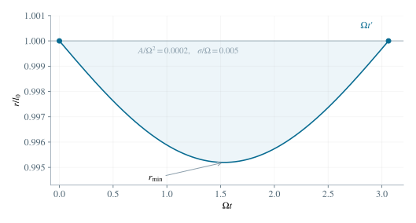

2.1 确立角度、径向变量与初始条件
取腿长为 r(t)，腿与向右水平线的夹角为 α(t)。顺时针转角定义为 β(t)=α0−α(t)，故 β˙(0)=ω。设刚着地时径向收缩速率为 u=−r˙(0)>0。机械能初值给出
E=2m(u2+l02ω2)+mgl0sinα0. （1）在本题近竖直近似下，sinα0≃1，因此记
u=m2E−l02ω2−2gl0,σ=l0u,δ(t)=l0r(t)−l0,δ(0)=0,δ˙(0)=−σ. （2）发生非零时长的压缩过程须有 u>0。若希望保留初始几何高度，可将上式中的 2gl0 换成 2gl0sinα0；两者之差属于近竖直角度的二阶修正。
2.2 先写极坐标方程，再作近似
径向向外取正。弹簧力为 k(l0−r)，重力的径向分量为 −mgsinα。径向和角向方程分别是
mr¨dtd(mr2α˙)=k(l0−r)+mrα˙2−mgsinα,=−mgrcosα. （3）腿接近竖直时，在角度的最低阶近似中取 sinα≃1,cosα≃0。于是关于接触点的角动量在此近似内守恒，给出
r2β˙≃l02ω,rα˙2≃r3l04ω2. （4）角动量守恒在这里采用角度最低阶近似，真实重力矩一般不为零。代入 r=l0(1+δ) 后，将径向方程除以 ml0，得 δ¨=−(k/m)δ+ω2(1+δ)−3−g/l0。用 (1+δ)−3=1−3δ+O(δ2)，常数项为 ω2−g/l0，位移项为 −(k/m+3ω2)δ，于是
δ¨+Ω2δ=A,Ω2=mk+3ω2,A=ω2−l0g>0. （5）3ω2 来自角动量约束下的径向变化。若误将角速度固定为 ω，便会丢失这一项。
2.3 解初值问题，确定第一次离地时刻
常数特解为 A/Ω2，齐次解为正弦与余弦的线性组合。代入两条初始条件，得到
r(t)=l0[1+Ω2A(1−cosΩt)−ΩσsinΩt]. （6）刚着地后 δ˙(0)<0，腿先压缩。第一次恢复自由长度时 δ(t′)=0。令 z=Ωt′，将等式作半角分解：
2sin2z(Ω2Asin2z−Ωσcos2z)=0. （7）排除初始根 z=0，由于 A,σ>0，第一次返回对应 0<z<π。故
t′=Ω2arctanAΩσ. （8）在 0<t<t′ 中，sin(Ωt/2)>0 且括号为负，故确有 r<l0；在 t=t′ 时 r˙=u>0，表示正在伸长。自由长度处弹簧支撑力为零，随后离地。

图 2. 小形变条件下的腿长曲线。横轴为 Ωt；首个正零点对应离地，谷底对应最大压缩。
2.4 积分求转角，并保留形变的一阶影响
角动量关系给出 β˙=ω(1+δ)−2≃ω(1−2δ)。因此整个支撑阶段的顺时针转角为
Δφ∫0t′δ(t)dt=ω[t′−2∫0t′δ(t)dt],=Ω2A(t′−Ωsinz)−Ω2σ(1−cosz). （9）令 w=tan(z/2)=Ωσ/A。半角公式给出 sinz=2w/(1+w2)、1−cosz=2w2/(1+w2)，故 Asinz+Ωσ(1−cosz)=2(Aw+Ωσw2)/(1+w2)=2Ωσ。将积分式写成 ∫δdt=(A/Ω2)t′−(Asinz+Ωσ(1−cosz))/Ω3，便得 (A/Ω2)t′−2σ/Ω2。代入转角积分得到
Δφ=ω[(1−Ω22A)t′+Ω24σ]. （10）将 t′ 代入，也可写为
Δφ=Ω32ω[(Ω2−2A)arctanAΩσ+2Ωσ]. （11）由于支撑阶段 δ<0，必有 Δφ>ωt′；压缩使转动加快，这与角动量关系一致。